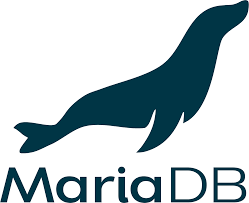
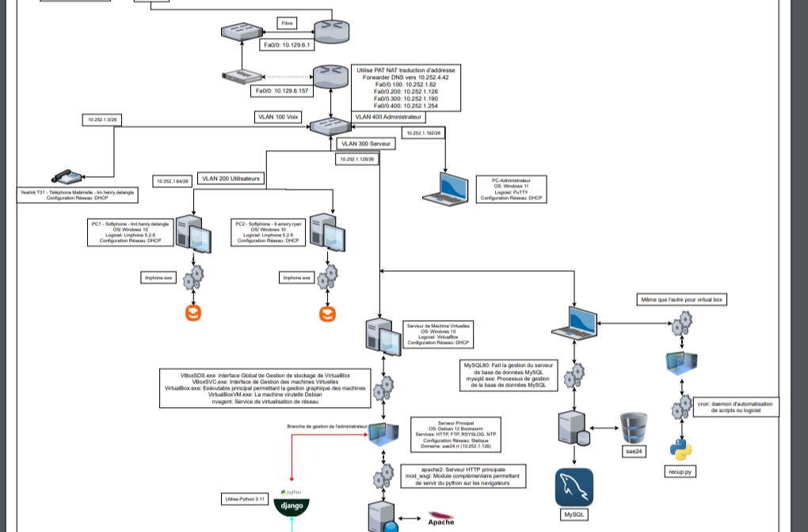
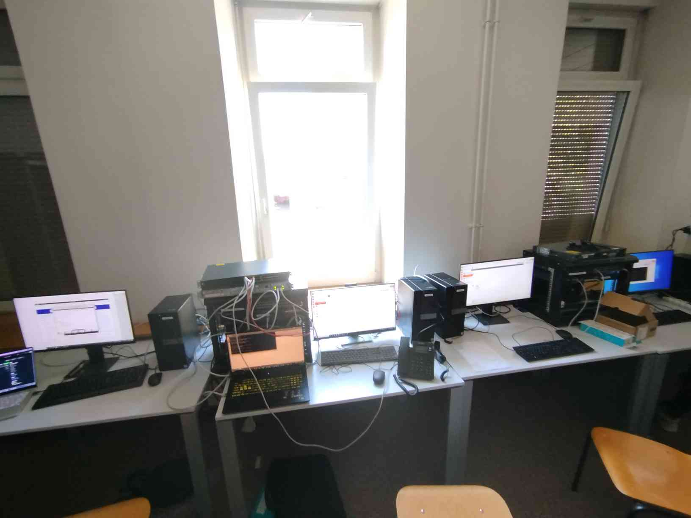
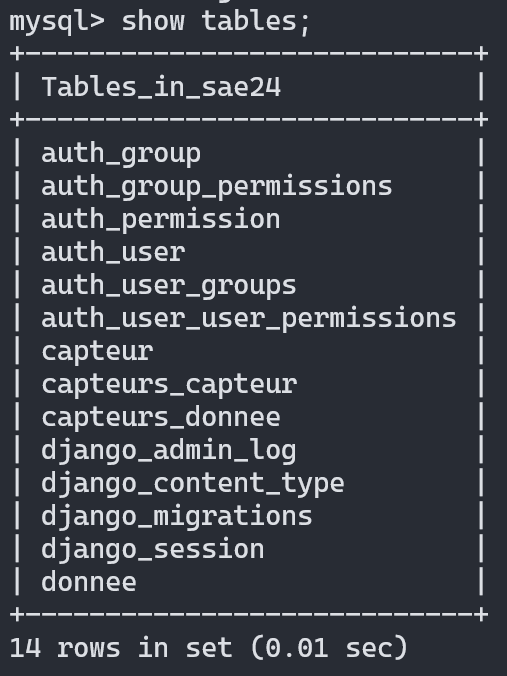
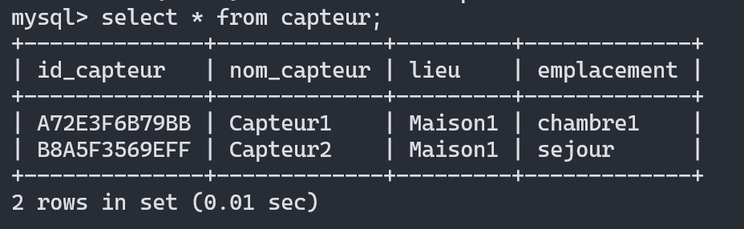
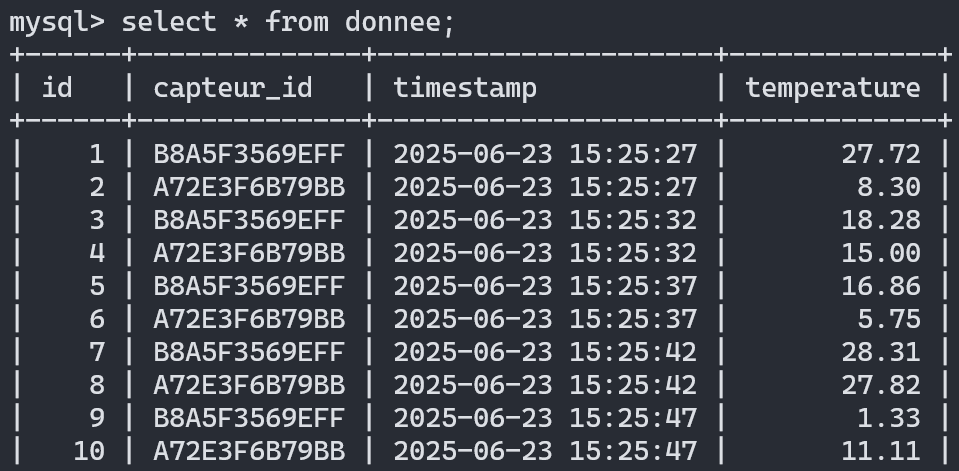
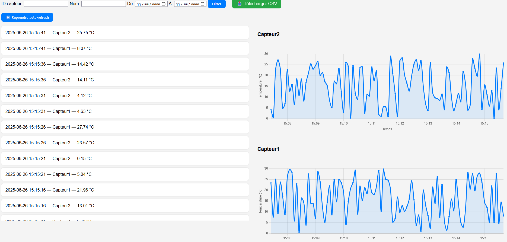

Résumé de la SAESAE Summary
Objectif :Objective: Ce projet intégratif a pour but de regrouper les connaissances et projets de la première année au sein d'une même infrastructure. Il s'agit de mettre en place une solution informatique complète pour une entreprise, couvrant le réseau local, la téléphonie IP, la collecte de données via capteurs et leur restitution sur une interface web. This integrative project aims to bring together the knowledge and projects of the first year within a single infrastructure. It involves setting up a complete IT solution for a company, covering the local network, IP telephony, data collection via sensors, and their display on a web interface.
Le projet est divisé en quatre pôles majeurs : The project is divided into four major divisions: RéseauNetworking, TéléphonieTelephony, Collecte IoTIoT Collection et , and Web/BdDWeb/Database.
Consulter le code source sur GitHub View source code on GitHubEnvironnement et OutilsEnvironment and Tools
Infrastructure Cisco Cisco Infrastructure
Configuration de routeurs et commutateurs physiques pour le cœur de réseau (VLANs, Routage, NAT).Configuration of physical routers and switches for the core network (VLANs, Routing, NAT).
Python
Scripts d'acquisition MQTT et logique métier pour le traitement des données capteurs.MQTT acquisition scripts and business logic for sensor data processing.
Django
Framework Web utilisé pour créer le dashboard dynamique et l'API de restitution des données.Web framework used to create the dynamic dashboard and the data retrieval API.

MariaDB
Système de base de données relationnelle centralisant les relevés de température.Relational database system centralizing temperature readings.
Debian
Système d'exploitation des serveurs virtualisés hébergeant les scripts et le site web.Operating system for the virtualized servers hosting the scripts and the website.
Linphone
Logiciel Softphone utilisé pour tester la connectivité SIP sur les différents VLANs.Softphone software used to test SIP connectivity across the different VLANs.
Architecture de l'InfrastructureInfrastructure Architecture


Grandes étapes techniquesMain technical steps
1. Segmentation Réseau1. Network Segmentation
Mise en place de Implementation of 4 VLANs (Voix, Utilisateurs, Serveur, Administrateur) et configuration du (Voice, Users, Server, Administrator) and configuration of routage inter-VLANinter-VLAN routing.
2. Sécurisation Infrasystème2. System Infrastructure Security
Mise en place de filtrage Implementation of ACL sur le routeur et de règles filtering on the router and strict iptables strictes sur le serveur Debian. rules on the Debian server.
3. Communication VoIP3. VoIP Communication
Inscription de softphones et téléphones physiques SIP, et configuration de la connectivité réseau pour les flux voix.Registration of softphones and physical SIP phones, and configuration of network connectivity for voice streams.
4. Collecte MQTT (Python)4. MQTT Collection (Python)
Développement du script d'écoute du broker Development of the MQTT et automatisation de l'insertion en base MariaDB. broker listening script and automation of MariaDB database insertion.
5. Développement Web (Django)5. Web Development (Django)
Conception du site dynamique gérant l'affichage temps réel des données collectées.Design of the dynamic website managing the real-time display of collected data.
6. Déploiement Services6. Service Deployment
Mise en production Apache2, synchronisation Apache2 production deployment, NTP et centralisation des logs via synchronization, and centralized logging via Rsyslog.
Mon rôle dans le projetMy role in the project
Lors de cette SAE effectuée en groupe, mon rôle était la récupération des données de température via MQTT et l'affichage de celle-ci sur un site Web. Pour la collecte, j'ai utilisé un script python sur une VM Debian, qui tournait en permanence et était relié à une base de données MariaDB. Cette base de données était elle-même reliée à un site web dynamique créé à l'aide de Django dont le but était d'afficher l'ensemble des données. During this group SAE, my role was to retrieve temperature data via MQTT and display it on a website. For data collection, I used a Python script on a Debian VM, which ran continuously and was connected to a MariaDB database. This database was itself linked to a dynamic website created using Django whose goal was to display all the data.
Organisation de la Base de DonnéesDatabase Organization
La base MariaDB structure les informations pour identifier les capteurs et historiser les relevés.The MariaDB database structures information to identify sensors and record readings over time.



Dashboard Dynamique (Django)Dynamic Dashboard (Django)

- Actualisation AJAX :AJAX Refresh: Requêtes asynchrones toutes les 5 secondes pour mettre à jour les données sans rechargement de page. Asynchronous requests every 5 seconds to update data without reloading the page.
- Visualisation Graphique :Graphical Visualization: Intégration de Integration of Chart.js pour suivre l'évolution temporelle des capteurs. to track the temporal evolution of the sensors.
- Filtrage métier :Business Filtering: Tri dynamique par ID capteur, nom ou plage de dates via les vues Django. Dynamic sorting by sensor ID, name, or date range via Django views.
- Export de données :Data Export: Fonctionnalité permettant de télécharger les relevés filtrés au format CSV. Feature allowing the download of filtered records in CSV format.
Compétences validéesValidated Skills
- AC11.03 Configurer les fonctions de base du réseau local. Configure the basic functions of the local network.
- AC12.04 Connecter les systèmes de ToIP (Téléphonie sur IP). Connect ToIP (Telephony over IP) systems.
- AC13.01 Utiliser un système informatique et ses outils (Virtualisation, Linux). Use a computer system and its tools (Virtualization, Linux).
- AC13.05 Choisir les mécanismes de gestion de données adaptés (MariaDB). Choose appropriate data management mechanisms (MariaDB).
- AC13.06 S'intégrer dans un environnement propice au développement (Gantt). Integrate into an environment conducive to development (Gantt).
Analyse réflexiveReflective Analysis
Lors de ce projet, j'ai pu retravailler l'ensemble des notions vues en première année. Etant arrivé en cours d'année, ce projet m'a permis d'être confiant sur les acquis du second semestre. Je suis parvenu à m'organiser efficacement dans ce projet pour finir ma partie dans les temps et comprendre les autres sections du projet. De plus, j'ai apprécié travailler sur du matériel physique car cela renforce l'aspect réaliste du projet. During this project, I was able to rework all the concepts covered in the first year. Having arrived mid-year, this project allowed me to be confident about the knowledge acquired during the second semester. I managed to organize myself effectively in this project to finish my part on time and understand the other sections of the project. Furthermore, I enjoyed working on physical hardware as it reinforces the realistic aspect of the project.